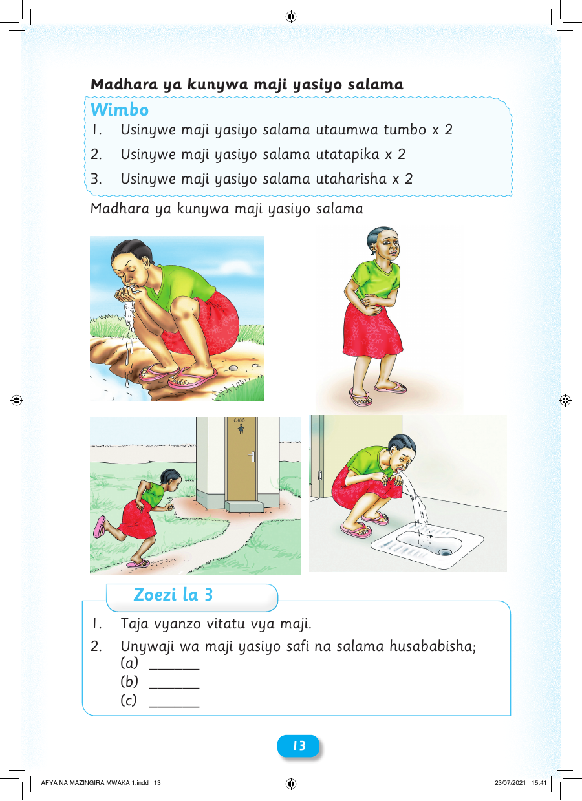

Madhara ya kunywa maji yasiyo salama Wimbo 1. Usinywe maji yasiyo salama utaumwa tumbo x 2 2. Usinywe maji yasiyo salama utatapika x 2 3. Usinywe maji yasiyo salama utaharisha x 2 Madhara ya kunywa maji yasiyo salama Zoezi la 3 1. Taja vyanzo vitatu vya maji. 2. Unywaji wa maji yasiyo safi na salama husababisha; (a) ______ (b) ______ (c) ______ 1133 AFYA NA MAZINGIRA MWAKA 1.indd 13 23/07/2021 15:41